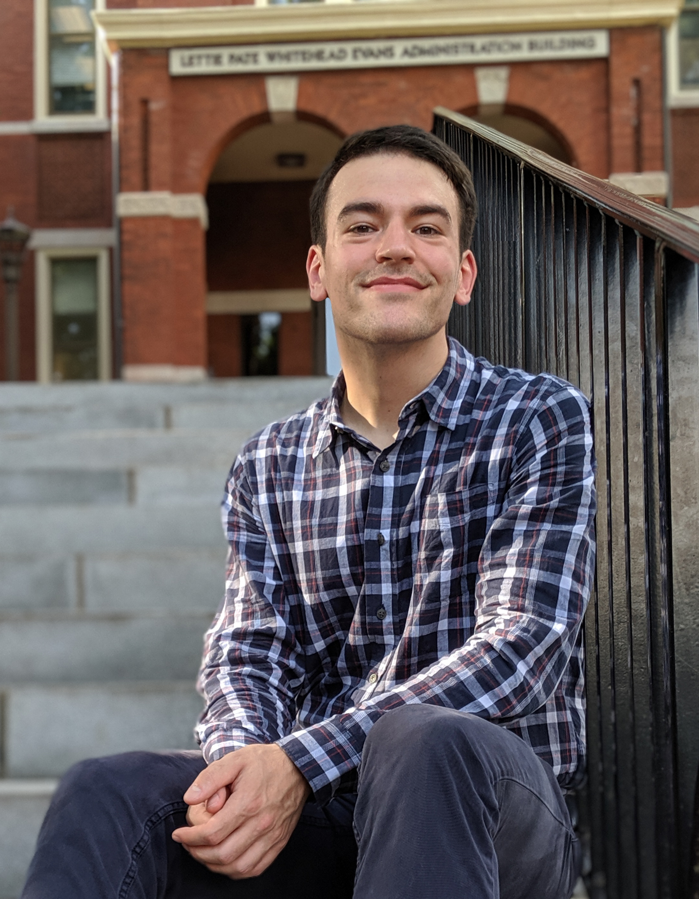

Hi, I'm Derek Nichols
Graduate Research Assistant and NSF Graduate Research Fellow

About Me
I came to Georgia Tech in 2017 to pursue a PhD in mechanical engineering specializing in experimental fluid mechanics with Professor Ari Glezer. My research focuses on understanding how aircraft nacelles behave in a crosswind and is funded by The Boeing Company and the NSF GRFP. Upon graduation, it is my goal to stay in academia and pursue a faculty position. In preparation, I’m working towards Georgia Tech’s Tech to Teaching Certificate and am also a member of various on-campus groups aimed towards students with similar goals.
Outside of research, I’ve been working on enhancing my coding skills by taking on small coding projects to learn new languages and get better at the ones that I already know. In my free time (when I have any), I train Muay Thai (i.e. kickboxing), enjoy long distance cycling, and hiking around Georgia.